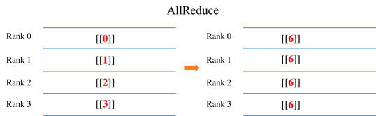
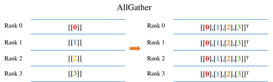
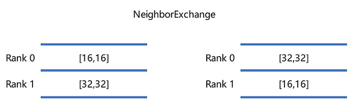
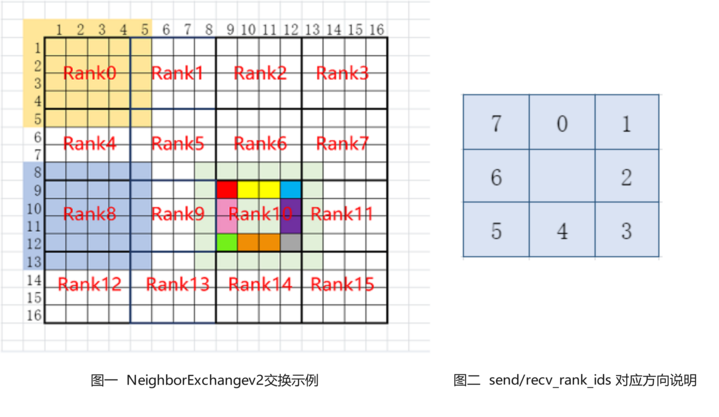

分布式集合通信原语

在分布式训练中涉及例如AllReduce、ReduceScatter、AllGather和Broadcast等通信操作进行数据传输，我们将在下述的章节分别阐述其含义和示例代码。
下述每个章节中给出了使用4张GPU进行不同通信操作的示例。示例中的输出来自于0号卡rank0程序的结果。用户需要将下述每个章节代码另存为communication.py。因为涉及到多卡程序，用户需要通过mpirun命令去启动communication.py。其中mpirun命令需要安装OpenMPI以及NCCL，对应的安装请参考此处。准备好communication.py后，在命令行中输入如下启动命令，即可启动多卡程序：
mpirun -output-filename log -merge-stderr-to-stdout -np 4 python communication.py
上述代码中的-np表示将启动4个进程任务，分别占用0，1，2，3号卡，并且将输出日志保存在log/1/rank.0目录下面。用户可以在此查看程序的输出结果。python communication.py表示启动脚本。
AllReduce

AllReduce操作会将每卡中AllReduce算子的输入Tensor进行求和操作，最终每卡的AllReduce算子输出是相同的数值。例如上图所示，每张卡AllReduce算子输入分别为0, 1, 2, 3。经过AllReduce之后，每张卡输出的结果为所有卡输入之和为6(0+1+2+3)。
示例代码如下：我们根据rank号(每张卡所属通信编号)初始化每个进程中AllReduce算子输入的数值，例如卡0，我们申请了一个1x1大小，数值为0的输入。然后调用AllReduce算子，在通信域为0-1-2-3的卡(所有卡的通信范围即nccl_world_group)中进行通信，并且打印输出结果。
import numpy as np
from mindspore.communication import init, get_rank
import mindspore as ms
import mindspore.nn as nn
import mindspore.ops as ops
init()
class Net(nn.Cell):
def __init__(self):
super(Net, self).__init__()
self.all_reduce_sum = ops.AllReduce(ops.ReduceOp.SUM, group="nccl_world_group")
def construct(self, x):
return self.all_reduce_sum(x)
value = get_rank()
input_x = ms.Tensor(np.array([[value]]).astype(np.float32))
net = Net()
output = net(input_x)
print(output)
其中0卡的运行结果如下，输出日志路径为log/1/rank.0：
[[6.]]
AllGather

AllGather操作会将每张卡的输入Tensor的第0维度上进行拼接，最终每张卡输出是相同的数值。例如上图所示，每卡的输入是大小为1x1的Tensor，经过AllGather操作之后，每卡AllGather算子的输出shape为[4,1]。其中索引为[0,0]的元素值来自于0号卡AllGather的输入[[0.0]]，索引为[1,0]的元素值来自于1号卡AllGather的输入[[1.0]]。
示例代码如下：我们根据rank号(每张卡所属通信编号)初始化每个进程中AllGather算子输入的数值，例如卡0，我们申请了一个1x1大小，数值为0的输入。然后调用AllGather算子，在通信域为0-1-2-3的卡(所有卡的通信范围即nccl_world_group)中进行通信，并且打印输出结果。
import numpy as np
import mindspore.ops as ops
import mindspore.nn as nn
from mindspore.communication import init, get_rank
import mindspore as ms
ms.set_context(mode=ms.GRAPH_MODE)
init()
class Net(nn.Cell):
def __init__(self):
super(Net, self).__init__()
self.all_gather = ops.AllGather()
def construct(self, x):
return self.all_gather(x)
value = get_rank()
input_x = ms.Tensor(np.array([[value]]).astype(np.float32))
net = Net()
output = net(input_x)
print(output)
运行结果如下，输出日志路径为log/1/rank.0：
[[0.],
[1.],
[2.],
[3.]]
ReduceScatter
ReduceScatter操作会将每张卡的输入先进行求和，然后在第0维度按卡数切分，将数据分发到对应的卡上。例如上图所示，每卡的输入均为4x1的Tensor。ReduceScatter先对输入求和得到[0, 4, 8, 12]的Tensor，然后进行分发，每卡获得1x1大小的Tensor。例如卡0对应的输出结果为[[0.0]]，卡1对应的输出结果为[[4.0]]。
示例代码如下：我们根据rank号(每张卡所属通信编号)初始化每个进程中ReduceScatter算子输入的数值，例如卡0，我们申请了一个4x1大小，数值为0的输入。然后调用ReduceScatter算子，在通信域为0-1-2-3的卡(所有卡的通信范围即nccl_world_group)中进行通信，并且打印输出结果。
import mindspore as ms
from mindspore.communication import init, get_rank
import mindspore.nn as nn
import mindspore.ops as ops
import numpy as np
ms.set_context(mode=ms.GRAPH_MODE)
init()
class Net(nn.Cell):
def __init__(self):
super(Net, self).__init__()
self.reduce_scatter = ops.ReduceScatter(ops.ReduceOp.SUM)
def construct(self, x):
return self.reduce_scatter(x)
input_x = ms.Tensor(np.array([[0], [1], [2], [3]]).astype(np.float32))
net = Net()
output = net(input_x)
print(output)
运行结果如下，输出日志路径为log/1/rank.0：
[[0.]]
Broadcast
Broadcast操作是将某张卡的输入广播到其他卡上，常见于参数的初始化。例如上图中，将0卡大小为1x1的Tensor进行广播，最终每张卡输出均为[[0]]。
示例代码如下：我们将Broadcast算子的根节点设置为0号卡，表示将从0号卡广播数据到其他卡上。同时申请了一个1x1大小，数值为0的输入。然后调用Broadcast算子，在通信域为0-1-2-3的卡(所有卡的通信范围即nccl_world_group)中进行通信，最终每张卡的输出数值来自卡0。
import mindspore as ms
from mindspore.communication import init
import mindspore.nn as nn
import mindspore.ops as ops
import numpy as np
ms.set_context(mode=ms.GRAPH_MODE)
init()
class Net(nn.Cell):
def __init__(self):
super(Net, self).__init__()
self.broadcast = ops.Broadcast(0)
def construct(self, x):
return self.broadcast((x,))
input_x = ms.Tensor(np.array([[0]]).astype(np.int32))
net = Net()
output = net(input_x)
print(output)
运行结果如下，输出日志路径为log/1/rank.0：
[[0]]
NeighborExchange

NeighborExchange操作会将提供一组数据分别发往其它特定的卡上，同时从特定的卡接收数据。例如上图中，rank 0 向rank 1发送shape为[16,16]的Tensor， 并接收rank 1发送的shape为[32,32]的Tensor；rank 1 向rank 0发送shape为[32,32]的Tensor， 并接收rank 0发送的shape为[16,16]的Tensor。最终rank 0输出了接收到的shape为[32,32]的Tensor， rank 1输出接收到的[16,16]的Tensor。
示例代码如下：我们使用NeighborExchange算子进行0号卡和1号卡之间的数据交换，将0号卡的数据发送到1号卡，并接收来自1号卡的数据；1号卡将数据发送到0号卡，并接收来自0号卡的数据；最终每张卡输出接收到的数据。
import os
import mindspore as ms
from mindspore.communication import init
import mindspore.nn as nn
import mindspore.ops as ops
import numpy as np
class Net0(nn.Cell):
def __init__(self):
super(Net0, self).__init__()
self.neighbor_exchange = ops.NeighborExchange(send_rank_ids=[1], recv_rank_ids=[1], recv_shapes=([2, 2],), send_shapes=([3, 3],), recv_type=ms.float32)
def construct(self, x):
out = self.neighbor_exchange((x,))
return out[0]
class Net1(nn.Cell):
def __init__(self):
super(Net1, self).__init__()
self.neighbor_exchange = ops.NeighborExchange(send_rank_ids=[0], recv_rank_ids=[0], recv_shapes=([3, 3],), send_shapes=([2, 2],), recv_type=ms.float32)
def construct(self, x):
out = self.neighbor_exchange((x,))
return out[0]
ms.set_context(mode=ms.GRAPH_MODE, device_target='Ascend')
init()
rank_id = int(os.getenv("RANK_ID"))
if (rank_id % 2 == 0):
input_x = ms.Tensor(np.ones([3, 3]), dtype = ms.float32)
net = Net0()
output = net(input_x)
print(output)
else:
input_x = ms.Tensor(np.ones([2, 2]) * 2, dtype = ms.float32)
net = Net1()
output = net(input_x)
print(output)
使用shell脚本启动2卡脚本，下述中的rank_table_file文件可以使用models下面的hccl_tools.py生成，对应的目录文件为models/utils/hccl_tools。示例shell脚本如下：
export MINDSPORE_HCCL_CONFIG_PATH=rank_table_file
export DEVICE_NUM=2
BASE_PATH=$(cd "$(dirname $0)"; pwd)
for((i=0; i<$DEVICE_NUM; i++)); do
rm -rf ${BASE_PATH}/rank${i}
mkdir ${BASE_PATH}/rank${i}
cp -r ${BASE_PATH}/neighborexchange.py ${BASE_PATH}/rank${i}/
cd ${BASE_PATH}/rank${i}
export RANK_ID=${i}
export DEVICE_ID=${i}
echo "start training for device $i"
python neighborexchange.py > log.txt 2>&1 &
done
rank0的结果为：
[[2. 2.]
[2. 2.]]
rank1的结果为：
[[1. 1. 1.]
[1. 1. 1.]
[1. 1. 1.]]
NeighborExchangeV2

NeighborExchangeV2操作会将Tensor中按照属性设置将部分数据发送给周边的8张卡，且从周边的8张卡中接收数据并拼接成新的Tensor，常用于将大Tensor切分在多卡上进行分布式卷积运算的场景。其中，属性send_rank_ids和recv_rank_ids分别为8个数字，表示8个方向上发送/接收的rank_id，填-1表示不发送/不接收，如上图图二表示对应8个方向上的顺序；属性send_lens和recv_lens分别为4个数字，表示[top, bottom, left, right] 四个方向上的发送/接收长度。例如上图图一中为一个16卡的示例， 以图中rank 10为例，设定send_rank_ids=[6,7,11,15,14,13,9,5]，将rank10的数据进行切分后分别向rank 5、6、7、11、15、14、13、9发送了对应部分的数据，例如图中红色发给rank5，红色、黄色和蓝色发给rank6，蓝色发给rank7等；设定recv_rank_ids=[6,7,11,15,14,13,9,5]，则同时rank10从这些卡分别接收了一些数据拼接到对应方向上，组成了新的Tensor输出，例如图中的rank10和浅绿色部分所示。
示例代码如下：我们使用NeighborExchangeV2算子进行0号卡和1号卡之间的数据交换，将0号卡的下方的数据发送到1号卡，并接收来自1号卡的数据拼接在下方；1号卡将上方部分数据发送到0号卡，并接收来自0号卡的数据拼接在上方；最终每张卡输出接收到的数据。
import os
import mindspore as ms
from mindspore.communication import init
import mindspore.nn as nn
import mindspore.ops as ops
import numpy as np
class Net0(nn.Cell):
def __init__(self):
super(Net0, self).__init__()
self.neighbor_exchangev2 = ops.NeighborExchangeV2(send_rank_ids=[-1, -1, -1, -1, 1, -1, -1, -1], send_lens=[0, 1, 0, 0], recv_rank_ids=[-1, -1, -1, -1, 1, -1, -1, -1], recv_lens=[0, 1, 0, 0], data_format="NCHW")
def construct(self, x):
out = self.neighbor_exchangev2(x)
return out
class Net1(nn.Cell):
def __init__(self):
super(Net1, self).__init__()
self.neighbor_exchangev2 = ops.NeighborExchangeV2(send_rank_ids=[0, -1, -1, -1, -1, -1, -1, -1], send_lens=[1, 0, 0, 0], recv_rank_ids=[0, -1, -1, -1, -1, -1, -1, -1], recv_lens=[1, 0, 0, 0], data_format="NCHW")
def construct(self, x):
out = self.neighbor_exchangev2(x)
return out
ms.set_context(mode=ms.GRAPH_MODE, device_target='Ascend')
init()
rank_id = int(os.getenv("RANK_ID"))
if (rank_id % 2 == 0):
input_x = ms.Tensor(np.ones([1, 1, 2, 2]), dtype = ms.float32)
net = Net0()
output = net(input_x)
print(output)
else:
input_x = ms.Tensor(np.ones([1, 1, 2, 2]) * 2, dtype = ms.float32)
net = Net1()
output = net(input_x)
print(output)
使用shell脚本启动2卡脚本，下述中的rank_table_file文件可以使用models下面的hccl_tools.py生成，对应的目录文件为models/utils/hccl_tools。示例shell脚本如下：
export MINDSPORE_HCCL_CONFIG_PATH=rank_table_file
export DEVICE_NUM=2
BASE_PATH=$(cd "$(dirname $0)"; pwd)
for((i=0; i<$DEVICE_NUM; i++)); do
rm -rf ${BASE_PATH}/rank${i}
mkdir ${BASE_PATH}/rank${i}
cp -r ${BASE_PATH}/neighborexchangev2.py ${BASE_PATH}/rank${i}/
cd ${BASE_PATH}/rank${i}
export RANK_ID=${i}
export DEVICE_ID=${i}
echo "start training for device $i"
python neighborexchangev2.py > log.txt 2>&1 &
done
rank 0结果为：
[[[[1. 1.]
[1. 1.]
[2. 2.]]]]
rank 1结果为：
[[[[1. 1.]
[2. 2.]
[2. 2.]]]]
AlltoAll
AlltoAll操作会将输入数据在特定的维度切分成特定的块数，并按顺序发送给其他rank，同时从其他rank接收输入，按顺序在特定的维度拼接数据。例如上图中，将Tensor在0维切分成5块，同时接收其它rank的数据，并在1维进行拼接，最后输出拼接后的数据。
示例代码如下：我们使用AlltoAll算子进行8卡的数据交换，把每张卡在第-2维进行切分，并按顺序把切分的数据发送给其它卡，同时接收其它卡的数据，在-1维进行拼接；最终每张卡输出拼接后的数据。
import os
import mindspore as ms
from mindspore.communication import init
import mindspore.nn as nn
import mindspore.ops as ops
import numpy as np
class Net(nn.Cell):
def __init__(self):
super(Net, self).__init__()
self.all_to_all = ops.AlltoAll(split_count = 8, split_dim = -2, concat_dim = -1)
def construct(self, x):
out = self.all_to_all(x)
return out
ms.set_context(mode=ms.GRAPH_MODE, device_target='Ascend')
init()
net = Net()
rank_id = int(os.getenv("RANK_ID"))
input_x = ms.Tensor(np.ones([1, 1, 8, 1]) * rank_id, dtype = ms.float32)
output = net(input_x)
print(output)
使用shell脚本启动8卡脚本，下述中的rank_table_file文件可以使用models下面的hccl_tools.py生成，对应的目录文件为models/utils/hccl_tools。示例shell脚本如下：
export MINDSPORE_HCCL_CONFIG_PATH=rank_table_file
export DEVICE_NUM=8
BASE_PATH=$(cd "$(dirname $0)"; pwd)
for((i=0; i<$DEVICE_NUM; i++)); do
rm -rf ${BASE_PATH}/rank${i}
mkdir ${BASE_PATH}/rank${i}
cp -r ${BASE_PATH}/alltoall.py ${BASE_PATH}/rank${i}/
cd ${BASE_PATH}/rank${i}
export RANK_ID=${i}
export DEVICE_ID=${i}
echo "start training for device $i"
python alltoall.py > log.txt 2>&1 &
done
rank0~rank7的结果为：
[[[[0. 1. 2. 3. 4. 5. 6. 7.]]]]
注意事项
在昇腾芯片上，NeighborExchange、NeighborExchangeV2、AlltoAll这三个算子需要进行全连接配网。
全连接配网支持任意卡之间进行通信，没有数量限制。全连接配网方式可参考HCCN Tool 接口参考进行配置。全连接配网时，所有卡需要VLan ID相同、IP在同一网段，配置到其他卡的静态路由表和ARP。其中，VLan ID需要在交换机上进行配置，其他IP等改动的单机8卡配置参考样例如下：
# 配置IP到同一网段
hccn_tool -i 0 -ip -s address 192.98.92.100 netmask 255.255.255.0
hccn_tool -i 1 -ip -s address 192.98.92.101 netmask 255.255.255.0
hccn_tool -i 2 -ip -s address 192.98.92.102 netmask 255.255.255.0
hccn_tool -i 3 -ip -s address 192.98.92.103 netmask 255.255.255.0
hccn_tool -i 4 -ip -s address 192.98.92.104 netmask 255.255.255.0
hccn_tool -i 5 -ip -s address 192.98.92.105 netmask 255.255.255.0
hccn_tool -i 6 -ip -s address 192.98.92.106 netmask 255.255.255.0
hccn_tool -i 7 -ip -s address 192.98.92.107 netmask 255.255.255.0
# 策略路由
hccn_tool -i 0 -ip_rule -a dir from ip 192.98.92.100 table 100
hccn_tool -i 1 -ip_rule -a dir from ip 192.98.92.101 table 101
hccn_tool -i 2 -ip_rule -a dir from ip 192.98.92.102 table 102
hccn_tool -i 3 -ip_rule -a dir from ip 192.98.92.103 table 103
hccn_tool -i 4 -ip_rule -a dir from ip 192.98.92.104 table 104
hccn_tool -i 5 -ip_rule -a dir from ip 192.98.92.105 table 105
hccn_tool -i 6 -ip_rule -a dir from ip 192.98.92.106 table 106
hccn_tool -i 7 -ip_rule -a dir from ip 192.98.92.107 table 107
hccn_tool -i 0 -ip_route -a ip 192.98.92.0 ip_mask 24 via 192.98.92.100 dev eth0 table 100
hccn_tool -i 1 -ip_route -a ip 192.98.92.0 ip_mask 24 via 192.98.92.101 dev eth1 table 101
hccn_tool -i 2 -ip_route -a ip 192.98.92.0 ip_mask 24 via 192.98.92.102 dev eth2 table 102
hccn_tool -i 3 -ip_route -a ip 192.98.92.0 ip_mask 24 via 192.98.92.103 dev eth3 table 103
hccn_tool -i 4 -ip_route -a ip 192.98.92.0 ip_mask 24 via 192.98.92.104 dev eth4 table 104
hccn_tool -i 5 -ip_route -a ip 192.98.92.0 ip_mask 24 via 192.98.92.105 dev eth5 table 105
hccn_tool -i 6 -ip_route -a ip 192.98.92.0 ip_mask 24 via 192.98.92.106 dev eth6 table 106
hccn_tool -i 7 -ip_route -a ip 192.98.92.0 ip_mask 24 via 192.98.92.107 dev eth7 table 107
# 静态ARP
hccn_tool -i 0 -arp -a dev eth0 ip 192.98.92.101 mac 78:b4:6a:f4:4c:16
hccn_tool -i 0 -arp -a dev eth0 ip 192.98.92.102 mac 78:b4:6a:f4:4c:15
hccn_tool -i 0 -arp -a dev eth0 ip 192.98.92.103 mac 78:b4:6a:f4:4c:14
hccn_tool -i 1 -arp -a dev eth1 ip 192.98.92.100 mac 78:b4:6a:f4:4c:17
hccn_tool -i 1 -arp -a dev eth1 ip 192.98.92.102 mac 78:b4:6a:f4:4c:15
hccn_tool -i 1 -arp -a dev eth1 ip 192.98.92.103 mac 78:b4:6a:f4:4c:14
hccn_tool -i 2 -arp -a dev eth2 ip 192.98.92.100 mac 78:b4:6a:f4:4c:17
hccn_tool -i 2 -arp -a dev eth2 ip 192.98.92.101 mac 78:b4:6a:f4:4c:16
hccn_tool -i 2 -arp -a dev eth2 ip 192.98.92.103 mac 78:b4:6a:f4:4c:14
hccn_tool -i 3 -arp -a dev eth3 ip 192.98.92.100 mac 78:b4:6a:f4:4c:17
hccn_tool -i 3 -arp -a dev eth3 ip 192.98.92.101 mac 78:b4:6a:f4:4c:16
hccn_tool -i 3 -arp -a dev eth3 ip 192.98.92.102 mac 78:b4:6a:f4:4c:15
hccn_tool -i 4 -arp -a dev eth4 ip 192.98.92.105 mac 78:b4:6a:f4:4c:0e
hccn_tool -i 4 -arp -a dev eth4 ip 192.98.92.106 mac 78:b4:6a:f4:4c:0d
hccn_tool -i 4 -arp -a dev eth4 ip 192.98.92.107 mac 78:b4:6a:f4:4c:0c
hccn_tool -i 5 -arp -a dev eth5 ip 192.98.92.104 mac 78:b4:6a:f4:4c:0f
hccn_tool -i 5 -arp -a dev eth5 ip 192.98.92.106 mac 78:b4:6a:f4:4c:0d
hccn_tool -i 5 -arp -a dev eth5 ip 192.98.92.107 mac 78:b4:6a:f4:4c:0c
hccn_tool -i 6 -arp -a dev eth6 ip 192.98.92.104 mac 78:b4:6a:f4:4c:0f
hccn_tool -i 6 -arp -a dev eth6 ip 192.98.92.105 mac 78:b4:6a:f4:4c:0e
hccn_tool -i 6 -arp -a dev eth6 ip 192.98.92.107 mac 78:b4:6a:f4:4c:0c
hccn_tool -i 7 -arp -a dev eth7 ip 192.98.92.104 mac 78:b4:6a:f4:4c:0f
hccn_tool -i 7 -arp -a dev eth7 ip 192.98.92.105 mac 78:b4:6a:f4:4c:0e
hccn_tool -i 7 -arp -a dev eth7 ip 192.98.92.106 mac 78:b4:6a:f4:4c:0d